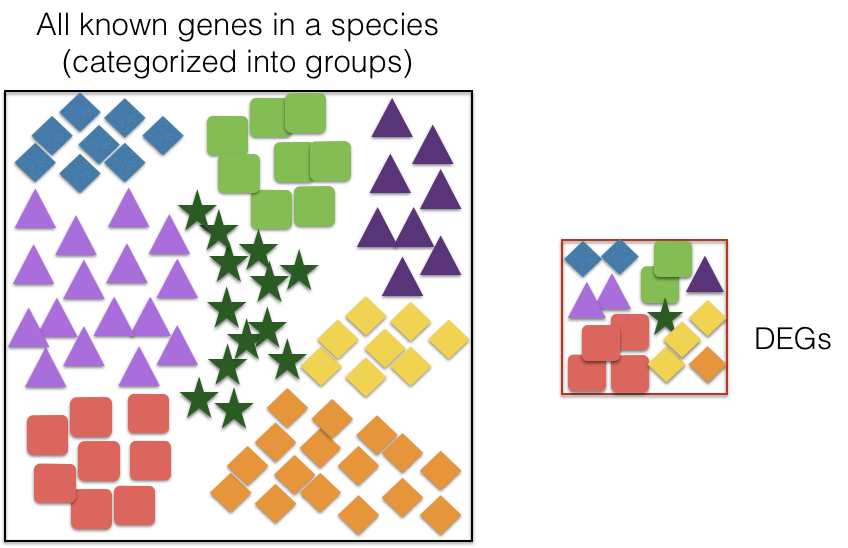

Functional enrichment analysis
Questions
- What is functional enrichment analysis?
- What are Gene Ontologies?
Objectives
- Understand what is Functional enrichment analysis.
Functional enrichment analysis
- The output of RNA-seq differential expression analysis is a list of significant differentially expressed genes (DEGs). To gain greater biological insight on the differentially expressed genes there are various analyses that can be done:
- determine whether there is enrichment of known biological functions, interactions, or pathways identify genes’ involvement in novel pathways or networks by grouping genes together based on similar trends.
- Use global changes in gene expression by visualizing all genes being significantly up- or down-regulated in the context of external interaction data.
Over-representation analysis
- There are a range of functional enrichment tools that perform some type of “over-representation” analysis by querying databases containing information about gene function and interactions.
- These databases typically categorize genes into groups based on shared function, or involvement in a pathway, or presence in a specific cellular location, or other categorizations, e.g. functional pathways, etc.
- Essentially, known genes are binned into categories that have been consistently named (controlled vocabulary) based on how the gene has been annotated functionally. These categories are independent of any organism, however each organism has distinct categorizations available.

- To determine whether any categories are over-represented, you can determine the probability of having the observed proportion of genes associated with a specific category in your gene list based on the proportion of genes associated with the same category in the background set (gene categorizations for the appropriate organism).
Gene Ontology project
- One of the most widely-used categorizations is the Gene Ontology (GO) established by the Gene Ontology project.
- Tools that investigate enrichment of biological functions or interactions often use the Gene Ontology (GO) categorizations, i.e. the GO terms to determine whether any have significantly modified representation in a given list of genes.
GO Ontologies
- To describe the roles of genes and gene products, GO terms are organized into three independent controlled vocabularies (ontologies) in a species-independent manner:
Biological process
- refers to the biological role involving the gene or gene product, and could include “transcription”, “signal transduction”, and “apoptosis”. A biological process generally involves a chemical or physical change of the starting material or input.
Molecular function
- Represents the biochemical activity of the gene product, such activities could include “ligand”, “GTPase”, and “transporter”.
Cellular component
- Refers to the location in the cell of the gene product. Cellular components could include “nucleus”, “lysosome”, and “plasma membrane”.
Key points
- This is a key point
- Another one
All materials copyright Sydney Informatics Hub, University of Sydney